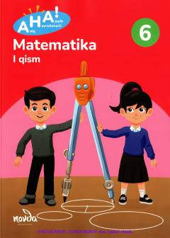

AM6-sinf o'quvchilari uchun mo'ljallangan zamonaviy matematika darsligi.
Ushbu darslik 6-sinf o'quvchilari uchun mo'ljallangan bo'lib, matematika fanini moddiy-rasmli-timsolli yondashuv asosida o'rgatadi. Kitob algebraik ifodalar, tenglamalar va oddiy kasrlar ustida amallarni o'z ichiga olgan bo'lib, mantiqiy fikrlash ko'nikmalarini rivojlantirishga qaratilgan.